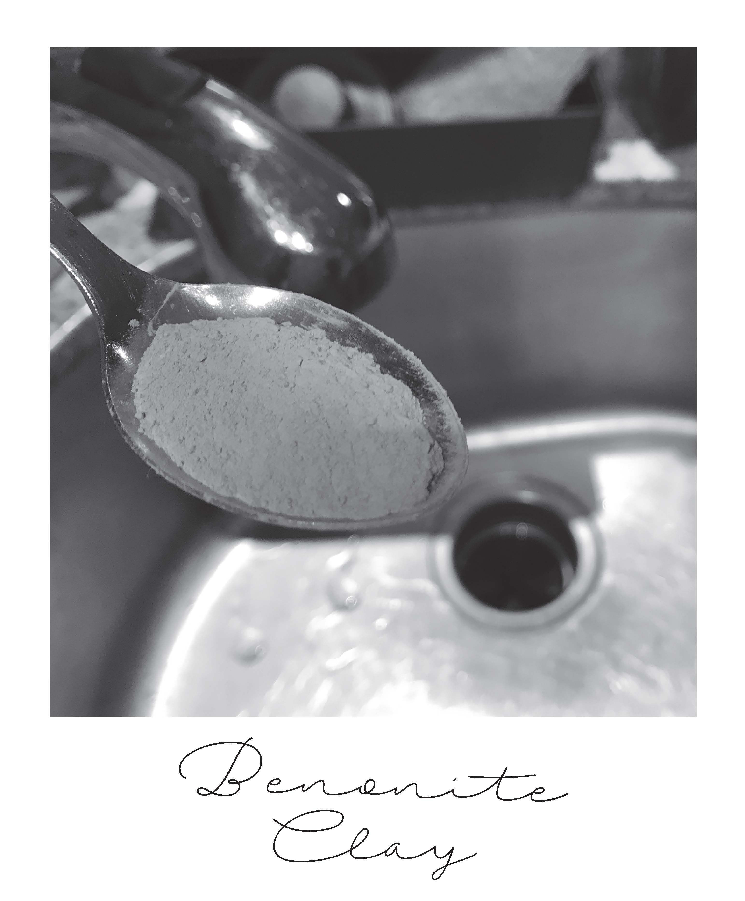
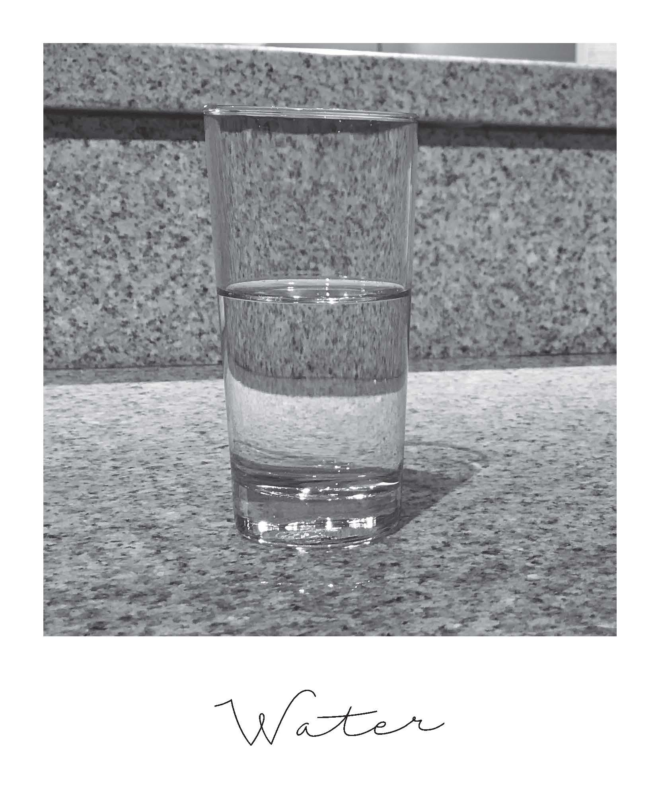

-

-

-

DIY Deep Cleaning Mud Mask
So, you want a spa treatment without paying the spa price, well you’ve come to the right place!
Published Date August 13, 2017
On a budget but want clean and flawless skin? Well here’s the perfect solution to your problem! We have a great easy to do DIY mud mask and inexpensive to do. All the products you will be using can be found in stores near you.
Aztec Healing Clay is great for doing facials, like the one you’re about to do. This product has great benefits for firming and detoxing your skin. Raw Honey is natural and helps add an even and silky texture to the mask. Herbs and Essential Oils are up to you, everyone has different skin types and some peoples skin may not like the herbs and oils.
This is a great alternative to going to the spa for a facial, mostly if you’re in a time crunch. You can make the facial and while it's hardening you can work on your school work, read a book, clean your room, or work on some business files.
Materials & Ingredients
- 1 Teaspoon of Bentonite Clay
- 1 Teaspoon of Raw Honey
- 1 Teaspoon of Water (add more if needed)
- ½ Teaspoon of Powered Calendula and Chamomile Flowers (optional)
- 2 Drops of Lavender Essential Oil (optional)
Steps
- Mix the bentonite clay with the powdered herbs (if using) in a small bowl
- Add honey and mix to form a thick paste
- Add enough warm water to form a thin paste. Add lavender essential oil (if using)
- Immediately apply to face and neck in a circular motion, avoid the eyes
- Leave on 10-15 minutes (or until it has hardened)
- Wash off with a wash cloth soaked in hot water (keep in mind mask might stain light cloths)
- Pat skin dry and enjoy your new skin